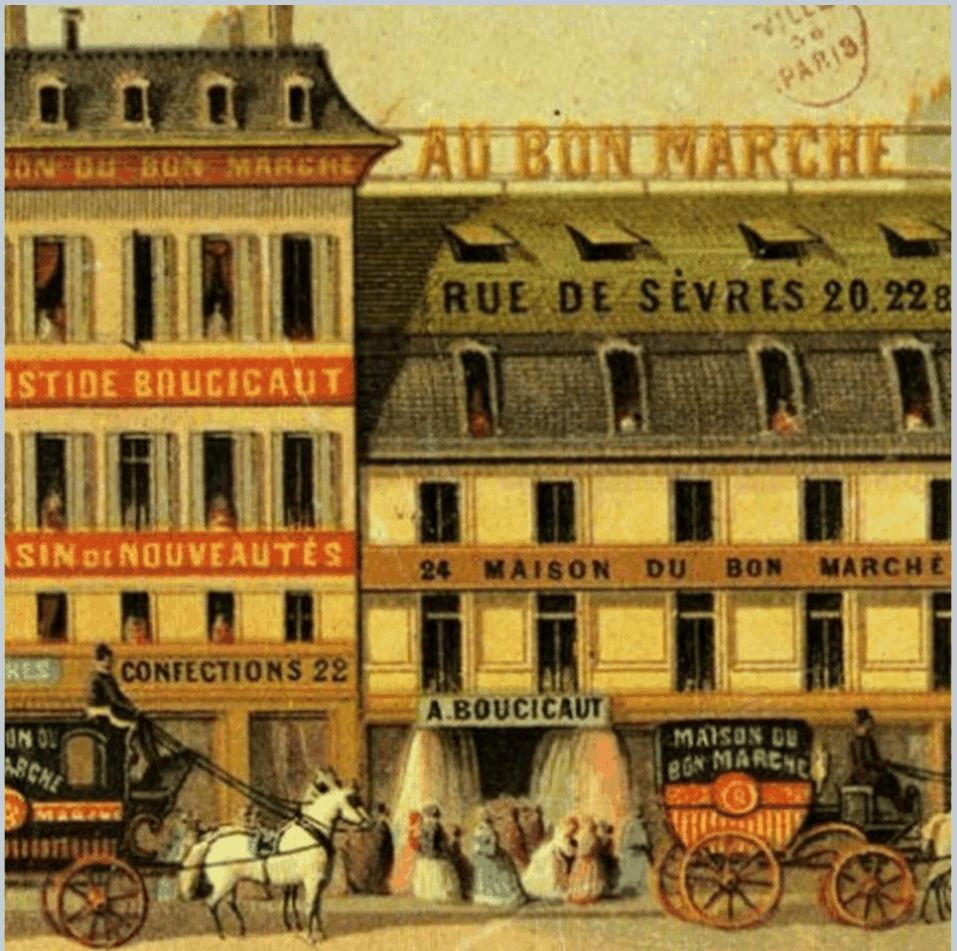
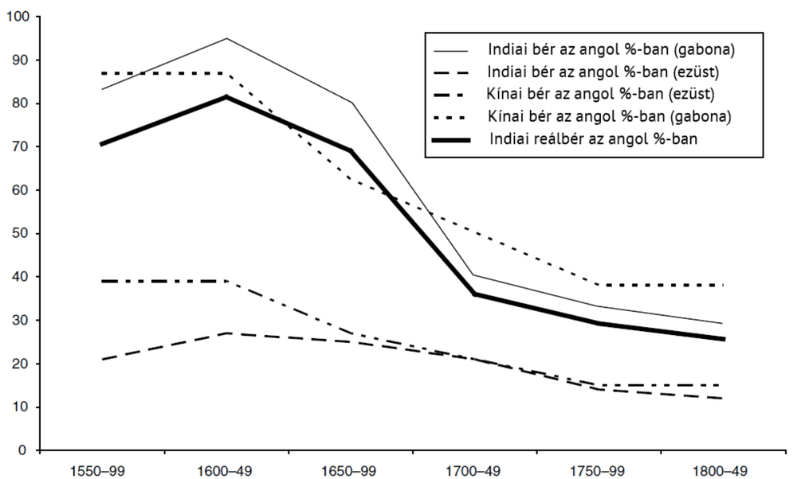
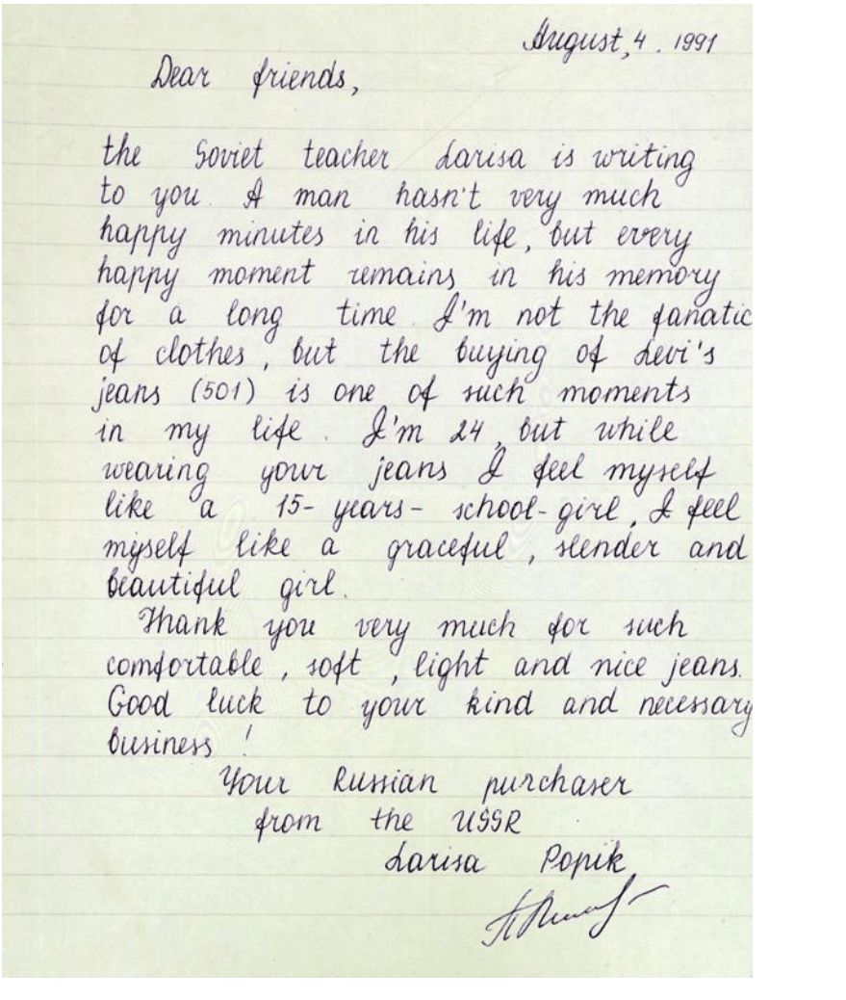

9. fejezet · diák: 152–165
Fogyasztói társadalom
„Brand a lelke mindennek.”
Szabó Balázs
Az ipari forradalom gépei rengeteg árut termeltek. De kinek? Ez a fejezet arról szól, hogyan lett a munkásból vásárló, és miért kellett a tömegtermeléshez tömegfogyasztás is – a Nyugat sikerének egyik versengő magyarázata (1. fejezet).
Nyitó eset: az áruház 152–153. dia
Az áruház „feltalálását” Aristide és Marguerite Boucicaut nevéhez kötik, akik 1852-ben megújult formában nyitották újra a párizsi Le Bon Marché nevű boltot. Újításaik jelentősek voltak:
- a boltot óriásira növesztették: több emeleten kínálták a háztartási cikkek, élelmiszerek, textíliák nagyon széles választékát;
- bevezették a fix árakat (nem kellett alkudni), cserébe magas minőséget ígértek, visszaváltási és pénzvisszafizetési garanciával;
- a belső tereket a ma ismert módon alakították ki, kávézókkal és közösségi terekkel.
A bevásárlóközpontok a középosztály számára is elérhetővé tették a luxusfogyasztást. Ennek két mélyreható következménye lett:
- összekapcsolta a vásárlás élményét a szabadidő eltöltésével – megteremtve a fogyasztói életérzést;
- nyilvános találkozási helyként szolgált a nők számára (akik addig leginkább csak otthon élhettek közösségi életet), és ezzel hozzájárult a női emancipációhoz.

A fejezet kérdése: miért vált a tömegfogyasztás a modern növekedés motorjává – és mi az ára?
Útiterv
✏️ Gondold végig – Az áruház
- Miért volt fontos újítás a fix ár és a pénzvisszafizetési garancia?
Mintaválasz
Mert csökkentette a vásárlás tranzakciós költségét és kockázatát: nem kellett alkudni, és a vevő nem tartott attól, hogy rossz minőséget kap. Így a bizalmatlan, ismeretlen vevők tömegei is bátran vásárolhattak – ez tette lehetővé a tömegfogyasztást.
- Hogyan kapcsolódik az áruház a női emancipációhoz?
Mintaválasz
Az áruház nyilvános, illendőnek tartott találkozóhely lett a nők számára, akik addig főleg otthon élhettek közösségi életet. A vásárlás a szabadidő és a társas élet része lett, és ez kitágította a nők mozgásterét a nyilvánosságban.
A textilipar felemelkedése: mit kezdenek a rengeteg szövettel? 154–156. dia
Az első modern iparág a textilipar volt. Ez adta az első ipari forradalom gerincét, és a később felzárkózó országok – Lengyelország vagy Japán a 19. század végén, Tajvan és Dél-Korea a 20. század második felében, Kína a 20. század vége felé – szintén a textiliparban erősödtek meg először.
Ugrásszerű növekedés: a szövőgépek száma Angliában:
| Év | 1803 | 1820 | 1829 | 1833 | 1857 |
|---|---|---|---|---|---|
| Szövőgépek | 2 400 | 14 650 | 55 500 | 100 000 | 250 000 |
Fél évszázad alatt a szövőgépek száma több mint százszorosára nőtt, a brit pamuttermékek ára pedig 1790 és 1830 között 90%-kal csökkent. A szövet olcsó lett – de ki veszi meg ezt a rengeteg szövetet?
Miért épp a textil? Mert mindenkinek kell ruha (tömegcikk), az előállítása egyszerű, ismétlődő mozdulatokból áll (könnyen gépesíthető), és nem igényel sok tőkét vagy képzett munkaerőt – ezért ideális első iparág egy felzárkózó országnak.
A régi és az új gazdasági modell
A gazdasági modell az ipari forradalom előtt:
- Tömeges igény az élelmiszer iránt van, ezt a mezőgazdaság állítja elő, ahol a népesség 70–90%-a dolgozik.
- Van igény iparcikkekre (ruházat, szerszám) és szolgáltatásokra (közbiztonság, kultúra) is, de ezekben a népesség kis része dolgozik.
- A jövedelem elosztása egyenlőtlen: egy kb. 10%-os elit rendelkezik a jövedelem nagy részével.
- A lakosság nagy része a létminimum (önfenntartás) közelében él, ezért a nem élelmiszer jellegű árukat nagyrészt csak az elit tudja megvenni.
Az ipari forradalom kulcsfontosságú összetevője, hogy a munkás egyben a nem élelmiszerek tömeges fogyasztójává is válik.
Két feltétel kell:
- az ipari és szolgáltatási foglalkoztatás csak akkor nőhet, ha az élelmiszertermelés hatékonyabbá válik, és eltartja a nem élelmiszert termelő munkásokat;
- de ez még kevés: valakinek meg is kell vennie a sok iparcikket és szolgáltatást, amit előállítanak.
hatékonyabb mezőgazdaság → felszabaduló munkaerő az iparnak → több iparcikk → a munkás bérből vásárol → tömegpiac → még több iparcikk
Anglia kezdetben a külföldi piacokra támaszkodott: Manchester, az angol textilipar központja, a világnak szőtt. 1780-ban a textil az angol export 6%-át, 1830-ban már 48%-át tette ki.
| Év | Lakosság (fő) |
|---|---|
| 1717 | 10 000 |
| 1772 | 20 000 |
| 1801 | 70 409 |
| 1851 | 303 382 |
| 1901 | 543 872 |
| 1931 | 766 311 |
| 1981 | 437 660 |
| 2001 | 392 819 |
| 2011 | 503 127 |
Manchester népessége egy évszázad alatt (1772–1851) tizenötszörösére nőtt – az ipari város a szakosodás és a piacméret növekedésének iskolapéldája. A 20. század második felében a textilipar hanyatlásával a népesség visszaesett, és csak a 21. században kezdett újra nőni.
✏️ Gondold végig – Textilipar
- Miért volt az ipari forradalom előtt szűk az iparcikkek piaca?
Mintaválasz
Mert a népesség 70–90%-a a mezőgazdaságban dolgozott, a létminimum közelében élt, és a jövedelmét élelmiszerre költötte. Iparcikkeket főleg a kb. 10%-os elit tudott venni, ami kis piacot jelentett.
- Milyen két feltétel kellett ahhoz, hogy nőhessen az ipari foglalkoztatás?
Mintaválasz
(1) Hatékonyabb élelmiszertermelés, hogy kevesebb földművelő is eltarthassa a gyári munkásokat. (2) Vásárlók az iparcikkekre: a munkásoknak maguknak is fogyasztóvá kellett válniuk (vagy külföldi piacokat kellett találni, mint Manchester textiljeinek).
Keleti és nyugati bérek 157–159. dia
A tömegfogyasztáshoz magas bér kell. Mennyit kerestek a munkások Keleten és Nyugaton? Persson ábrája az indiai és a kínai béreket az angol bérek százalékában mutatja – gabonában és ezüstben mérve:

A 16. század közepén a gabonában mért indiai és kínai bérek még az angolnak 80–90%-át érték el. 1800–1849-re ez 25–40%-ra esett: a nyugati munkások sokkal többet vehettek a bérükből, mint a keletiek.
Ezt a szétválást a gazdaságtörténészek „nagy divergenciának” nevezik (Kenneth Pomeranz). A vita arról szól, mikor kezdődött: a diasor ábrája szerint már a 17. században, jóval az ipari forradalom előtt. A magas angol bér a 3. és az 1. fejezet egyik magyarázatához is kapcsolódik: a drága munkaerő ösztönözte a gépesítést (1. fejezet).
Európán belül sem volt egyforma a helyzet. Robert Allen az építőmunkások reálbérét egy meghatározott fogyasztói kosárban fejezte ki (hány kosarat tud megvenni a béréből):
| Város | 1500–49 | 1550–99 | 1600–49 | 1650–99 | 1700–49 | 1750–99 | 1800–49 | 1850–99 | 1900–13 |
|---|---|---|---|---|---|---|---|---|---|
| Amszterdam | 2,02 | 1,61 | 1,93 | 1,99 | 2,02 | 1,83 | 1,49 | 1,65 | 2,85 |
| Antwerpen | 2,41 | 2,26 | 2,27 | 2,13 | 2,23 | 2,13 | 2,01 | 2,27 | 3,07 |
| London | 2,19 | 1,86 | 1,82 | 2,07 | 2,21 | 2,21 | 2,31 | 3,34 | 4,21 |
| Firenze/Milánó | 1,74 | 1,53 | 1,62 | 1,42 | 1,34 | 0,97 | 0,77 | 0,91 | 1,68 |
| Madrid | 1,61 | 1,83 | 1,81 | 1,91 | 1,29 | 1,72 | 1,87 | 1,75 | |
| Párizs | 1,41 | 1,45 | 1,37 | 1,40 | 1,28 | 1,20 | 1,72 | 2,14 | 2,71 |
| Lipcse | 0,85 | 1,04 | 1,44 | 1,27 | 1,06 | 1,29 | 1,76 | 2,67 | |
| Bécs | 1,87 | 1,31 | 1,12 | 1,34 | 1,33 | 1,14 | 0,86 | ||
| Krakkó | 1,91 | 1,91 | 1,16 | 1,37 | 1,24 | 1,16 | 1,30 | 1,92 | 1,95 |
Londonban és Antwerpenben a reálbér tartósan magas maradt, és a 19. században meredeken nőtt; Firenzében, Milánóban és Bécsben viszont a 18–19. század fordulójára erősen visszaesett. Az ipari forradalom ott indult, ahol a bérek a legmagasabbak voltak.
Ezt az Európán belüli szétválást „kis divergenciának” is hívják: Északnyugat-Európa (Anglia, Németalföld) elhúzott Dél- és Közép-Európától, már az ipari forradalom előtt.
Hosszabb távon és világméretben még látványosabb a különbség (az építőmunkások reálbére egy másik, OECD-s becslés szerint, fogyasztói kosárban kifejezve):
| Év | Nyugat-Európa | Kelet-Európa | Angolszász gyarmatok | Latin-Amerika | Kelet-Ázsia | Délkelet-Ázsia | Közel-Kelet | Fekete-Afrika | Világ |
|---|---|---|---|---|---|---|---|---|---|
| 1820 | 12,6 | 7,2 | – | 5,7 | 3,3 | 4,1 | 6,5 | 2,9 | 5,7 |
| 1850 | 11,0 | 6,3 | – | 7,3 | 2,0 | 4,4 | 3,8 | 3,3 | 5,3 |
| 1900 | 19,0 | 13,1 | 70,1 | 10,3 | 4,8 | 3,6 | 4,7 | 4,9 | 11,1 |
| 1950 | 21,3 | 10,7 | 98,9 | 18,5 | 6,5 | 6,3 | 19,3 | 7,9 | 16,8 |
| 2000 | 163,3 | 38,6 | 169,8 | 26,5 | 36,6 | 10,0 | 71,6 | 18,3 | 43,0 |
Az „angolszász gyarmatok” (USA, Kanada, Ausztrália, Új-Zéland) bérei 1900-ra mindenkit messze megelőztek – a 8. fejezet „angol útjának” egyik következménye. Kelet-Ázsia csak a 20. század második felében kezdett felzárkózni.
✏️ Gondold végig – Bérek
- Miért fontos a fogyasztói társadalom kialakulásához, hogy a nyugati bérek magasabbak voltak?
Mintaválasz
Mert a tömegtermeléshez tömegkereslet kell: csak az a munkás vehet iparcikket, akinek a béréből a létminimumon felül is marad. A magas bér ráadásul a gépesítést is ösztönözte, ami tovább csökkentette az iparcikkek árát.
- Mit mutat, hogy Firenzében és Milánóban a 18–19. század fordulójára visszaesett a reálbér, Londonban pedig nőtt?
Mintaválasz
Hogy a fejlődés Európán belül is szétvált: a reneszánsz Itália, egykor a centrum, lemaradt Északnyugat-Európához képest. A centrum áthelyeződött (vö. 2. fejezet), és az ipari forradalom a magas bérű térségben indult.
Nem minden szép: árnyoldalak és jogkiterjesztés 160–161. dia
- A nagyvárosok nehezen élhetők, szennyezettek, koszosak.
- A gazdaság ciklikus ingadozásai miatt a reáljövedelem erősen ingadozik (7. fejezet).
- Növekvő jövedelmi különbségek:
- 1780 és 1830 között Angliában az egy munkásra jutó teljesítmény 25%-kal nőtt, a bér csak 5%-kal;
- Angliában a felső tized 1801-ben a jövedelem 25%-át, 1848-ban már 35%-át kapta;
- Poroszországban a felső 5% jövedelemrészesedése 1854-ben 21%, 1896-ban 27%, 1913-ban 43% volt.
A korai ipari forradalom bér- és termelékenységadatai nem azt jelentik, hogy a munkások helyzete romlott – a bérük is nőtt –, hanem azt, hogy a növekedés haszna egyenlőtlenül oszlott meg: nagyobb része a tőketulajdonosokhoz került.
Jogkiterjesztés
A növekvő egyenlőtlenségre adott egyik válasz a politikai jogok kiterjesztése volt – ami egyben a fogyasztói társadalom piacát is bővítette.
Szavazati jog Európában: 1850-ben mindössze három európai országban (Franciaország, Svájc, Görögország) szavazott legalább a lakosság ötöde; 1900-ban már tíz országban, és Anglia meg Svédország is közelített ehhez.
| Év | Szabály | A lakosság hány százaléka szavazhat? |
|---|---|---|
| 1848 | vagyoni cenzus | kb. 7% |
| 1874 | adócenzus, nyilvános, élőszavas szavazás | kb. 6% |
| 1919 | 24 éven felüli férfiak és írni-olvasni tudó nők, titkos szavazás | kb. 40% |
| 1922 | jelentős szigorítás | kb. 30% |
| 1938 | titkos szavazás, korhatár 26, illetve 30 év | – |
| 1945 | minden 20 év feletti állampolgár | kb. 60% |
A választójog és a fogyasztás kapcsolata kétirányú: a választójoggal rendelkező munkások olyan politikát követelhettek (munkavédelem, bérek, oktatás, szociális ellátás), amely a vásárlóerejüket is növelte – ez pedig bővítette a tömegpiacot. Ez a jóléti állam egyik gyökere (14. fejezet).
✏️ Gondold végig – Árnyoldalak
- Mit mutat, hogy Angliában 1780 és 1830 között a termelékenység 25%-kal, a bér 5%-kal nőtt?
Mintaválasz
Hogy a növekedés haszna egyenlőtlenül oszlott meg: a többlet nagyobb része a tőketulajdonosokhoz került, nem a munkásokhoz. Ezt a felső tized jövedelemrészesedésének növekedése is mutatja (25%-ról 35%-ra).
- Hogyan kapcsolódik a választójog kiterjesztése a fogyasztói társadalomhoz?
Mintaválasz
A szélesebb politikai részvétel olyan intézkedéseket hozott (bérek, munkavédelem, oktatás, szociális ellátás), amelyek a széles rétegek vásárlóerejét növelték. Így a bérekkel, a hitellel és az urbanizációval együtt bővítette a tömegpiacot.
A 20. század: totalitárius felzárkózás és amerikai tömegfogyasztás 162–165. dia
Totalitárius rendszerek és a felzárkózás. Az 1930-as évektől Németország és a Szovjetunió is gyorsan növelte a kibocsátását. De milyen kibocsátást?
Tőkejavak (beruházási javak): gépek, alkatrészek, építőelemek – olyan javak, amelyek más javak előállításához kellenek.
Fogyasztási javak: a végső fogyasztók által megvásárolt javak.
Az erőltetett, terv által irányított felzárkózás a beruházási javakra fókuszál. A fogyasztási javakból hiány van, a lakosság fogyasztása stagnál vagy lassan nő, és a fogyasztási javak minősége alig javul.
terv: minden a tőkejavakra → gyors GDP-növekedés → de hiány, stagnáló fogyasztás → nincs fogyasztói társadalom
Az USA a második világháború után
A hazatérő katonáknak magas jóléti szintet teremtettek – GI Bill (1944):
- tandíjtámogatás és ösztöndíj a felsőfokú tanulmányokba kezdőknek – 1947-ben az elsőévesek fele háborús veterán volt;
- kedvező kamatozású lakáshitel;
- egyéves munkanélküli-segély;
- orvosi ellátás és új kórházak.
A GI Bill becsült költsége 14,5 milliárd dollár volt – többe került, mint a Marshall-terv (12 milliárd).
Elterjedtek a fogyasztási hitelek, és a háztartások nagyon gyorsan modernizálódtak:
| Termék | Megjelenés | A háztartások felében |
|---|---|---|
| Mosógép | 1926 | 1965 |
| Légkondicionáló | 1945 | 1974 |
| Ruhaszárító | 1949 | 1972 |
| Színes tévé | 1959 | 1973 |
Figyeld meg, hogy az újabb termékek egyre gyorsabban terjedtek: a mosógépnek 39 év kellett, a színes tévének 14.
A farmernadrág – a szabadság szimbóluma
A nyugati civilizáció legnépszerűbb találmánya a fogyasztói társadalom. A fogyasztói társadalomra áttérő országok sikeresebbek voltak, a többi ország polgárai pedig irigyelték őket.

A levélben egy 24 éves szovjet tanárnő, Larisa írja (szabad fordításban): „Az ember életében nincs sok boldog perc, de minden boldog pillanat sokáig megmarad az emlékezetében. Nem vagyok a ruhák megszállottja, de egy Levi’s farmer (501) megvásárlása ilyen pillanat volt az életemben. 24 éves vagyok, de amikor a farmerjüket viselem, úgy érzem magam, mint egy 15 éves iskoláslány – kecses, karcsú és gyönyörű.” A levél alig két héttel a Szovjetunió összeomlását felgyorsító augusztusi moszkvai puccskísérlet előtt kelt.
✏️ Gondold végig – A 20. század
- Miért nem jött létre fogyasztói társadalom a gyorsan növekvő Szovjetunióban?
Mintaválasz
Mert az erőltetett, tervvezérelt felzárkózás a tőkejavakra (gépek, nehézipar) koncentrált. A fogyasztási cikkekből hiány volt, a fogyasztás stagnált, a minőség alig javult. A GDP nőtt, de nem alakult ki a tömegtermelést fenntartó tömegkereslet.
- Hogyan segítette a GI Bill az amerikai fogyasztói társadalom kiépülését?
Mintaválasz
Oktatási támogatással növelte az emberi tőkét (és ezzel a jövőbeli béreket), kedvező lakáshitellel, segéllyel és egészségügyi ellátással pedig vásárlóerőt és biztonságot teremtett. A fogyasztási hitelekkel együtt ez tette lehetővé a háztartások gyors modernizációját.
- Mit üzen egy szovjet tanárnő levele egy amerikai farmercégnek 1991-ben?
Mintaválasz
Hogy a fogyasztói társadalom vonzereje a hidegháborúban politikai erővé vált: a nyugati termékek a szabadság szimbólumai lettek, és a hiánygazdaságban élők irigyelték a fogyasztói társadalmakat.
Összefoglalás: a fogyasztói társadalom növekedési kompromisszuma 165. dia
- A tömegtermeléshez tömegkereslet kell: a bérek, az urbanizáció, a marketing, a hitel és a jogkiterjesztés együtt növelték a piacot.
- A nagyobb választék és az emelkedő fogyasztás javította az anyagi jólétet.
- A modell egyenlőtlenséget, környezeti terhelést és új függőségeket is teremthet.
- A fogyasztás ezért egyszerre a modern növekedés motorja és fenntarthatósági problémája.
Válasz a fejezet kérdésére: az ipari forradalom gépei csak akkor érték meg, ha a rengeteg árut valaki megvette – ehhez a munkásnak fogyasztóvá kellett válnia: magasabb bérre, városi életre, hitelre és politikai jogokra volt szükség. A tömegfogyasztás így a tömegtermelés motorja lett, de ára is van: egyenlőtlenség, környezeti terhelés (vö. Jevons, 1. fejezet) és új függőségek.
Esszéhez: ha ezt látod → ezt használd
| Ha az esetben ez áll… | …akkor ezt a fogalmat / mechanizmust használd |
|---|---|
| Egy ország a textiliparral kezdi az iparosodást | a textil mint első modern iparág (→) |
| Sok áru, de kevés vásárló | a tömegtermeléshez tömegkereslet kell; a munkás mint fogyasztó (→) |
| Új kereskedelmi forma, fix ár, garancia | az áruház; a vásárlás tranzakciós költségének csökkenése (→) |
| Magas bérek, gépesítés | keleti és nyugati bérek, nagy divergencia (→) |
| Gyors növekedés, de nő az egyenlőtlenség | a termelékenység és a bér eltérő növekedése (→) |
| A választójog bővül | jogkiterjesztés, a piac bővülése (→) |
| Tervgazdaság: nehézipar, hiány | tőkejavak vs. fogyasztási javak (→) |
| Állami program a háztartások vásárlóerejéért | GI Bill, fogyasztási hitel (→) |
Kapcsolódások
- A Nyugat sikerének versengő magyarázatai: fogyasztás (1. fejezet).
- Urbanizáció és szakosodás; a piac mérete (2. fejezet).
- Munkaidő és életszínvonal (3. fejezet).
- Minőségjavulás, Nordhaus (5. fejezet).
- Az angol gyarmati út és a magas angolszász bérek (8. fejezet).
- Munkamorál és fogyasztás (10. fejezet); tervgazdaság (13. fejezet); jóléti állam (14. fejezet).